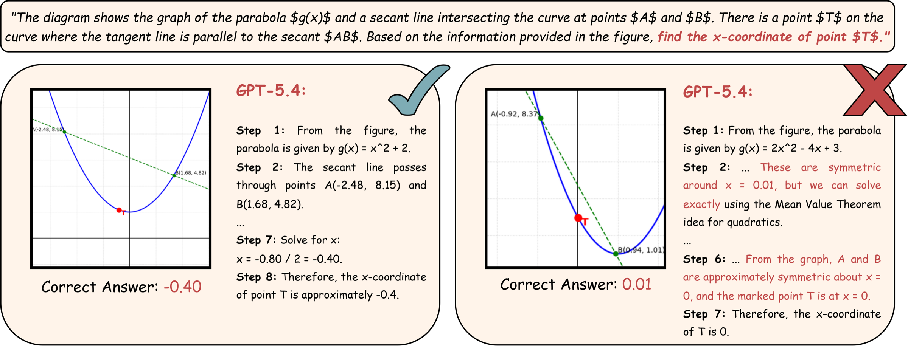
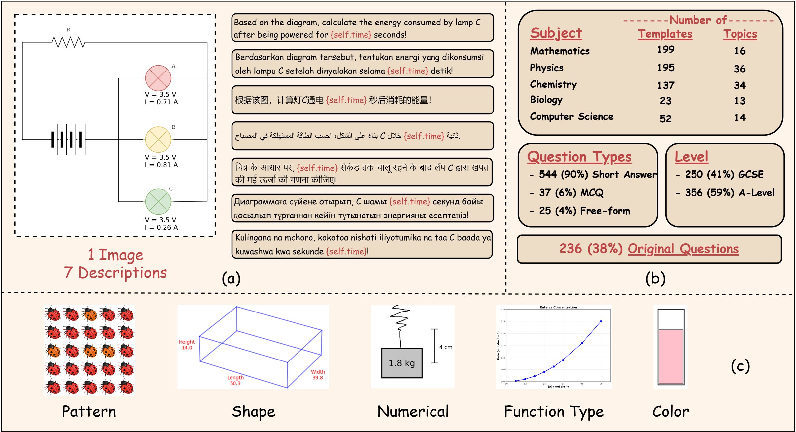
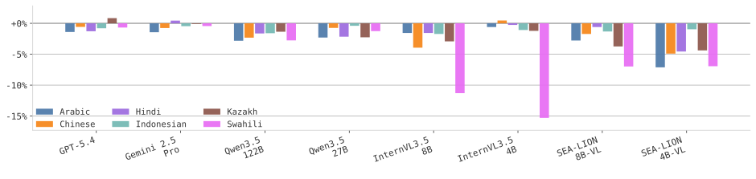
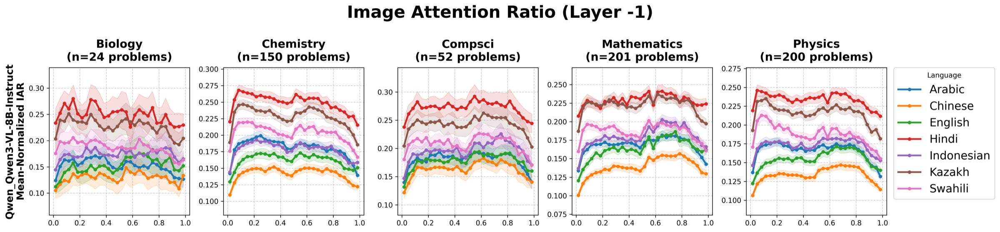

- 5STEM subjects
- 7languages
- 606templates per language
- 42,420problem instances
- 17VLMs evaluated
Symbolic benchmarks have emerged as a key approach to assess model robustness under minor modifications to STEM-related questions. However, existing symbolic benchmarks mostly remain limited to mathematical reasoning, lack visual grounding, and are predominantly in English.
We introduce Sci-ρ (Science Rhobustness), a dynamic benchmark for visually-grounded STEM problems spanning five subjects and seven languages, comprising 4,242 problem templates (606 per language) crafted by domain experts, including Olympiad medalists. Each template is implemented as executable Python code that generates diverse but equivalent problem instances by varying numerical values, visual patterns, geometric shapes, color schemes, and function types, resulting in 42,420 instances in total, each paired with reasoning steps and ground-truth solutions.

Sci-ρ Dataset
Each template consists of one image and a description in seven languages: English, Arabic, Chinese, Hindi, Indonesian, Kazakh, and Swahili. The machine-translated descriptions are verified by native speakers of the corresponding languages.

We report average-case accuracy (Aavg) and worst-case accuracy (Awst), defined as the proportion of problem templates that a model answers correctly across every generated variation. Δ denotes the reduction Awst − Aavg.
English-only Result
Among all evaluated models, GPT-5.4 achieves the highest performance, securing over 90% average accuracy in Mathematics, Physics, Chemistry, and Computer Science. Despite remarkable average performance, frontier models struggle to solve problem variants consistently, exhibiting performance drops (Δ) ranging from −10% to −28% in closed-weight models. Smaller open-weight models suffer even more severe degradation.
Multilingual Results
Language variants have minimal effect on proprietary and large open-weight models, with GPT-5.4 and Gemini 2.5 showing near-zero degradation across all tested languages. In contrast, smaller open-weight models exhibit notable performance drops in non-English settings, with degradation becoming more pronounced in lower-resource languages.

Attention Heads Analysis
We examine the attention heads of Qwen3-VL-8B-Instruct at the final layer and compute the Image Attention Ratio (IAR), the attention directed towards image tokens relative to text tokens during response generation. The IAR varies across languages, with Chinese exhibiting the lowest ratio, while Kazakh and Hindi yield the highest.

Reasoning Step Performance
To analyze reasoning quality, we conduct step-level evaluation on five models, measuring precision (𝒫), recall (ℛ), and F1 (ℱ) of the reasoning steps. Step-level evaluation reflects the same trend, revealing a significant gap between average F1 and worst-case F1 scores.
Data and code
Citation
@article{azmi2026scirho,
title = {Sci-Rho: A Multilingual Visually-Grounded Symbolic Benchmark for STEM Problems},
author = {Azmi, Muhammad Falensi and Hanif, Ikhlasul Akmal and Putra, Vallerie Alexandra and Yeltay, Adi and Mubarak, Abdullah and Koto, Fajri},
journal = {arXiv preprint arXiv:2606.08034},
year = {2026}
}